class: center, middle # Sequences, Attention and memory Charles Ollion - Olivier Grisel .affiliations[    ] --- ## Reminder: Recurrent Neural Networks .center[ <img src="../06_deep_nlp/images/unrolled_rnn_one_output_2.svg" style="width: 600px;" /> ] -- takes a sequence as input may output a single value, or a value for each time-step of the input --- ## Outline ### Encoder-decoder for machine translation -- ### Attention mechanisms -- ### Towards memory and reasoning --- class: center,middle # Encoder-Decoder for machine translation --- ## Encoder-Decoder .center[ <img src="images/encoder_decoder_1.svg" style="width: 680px;" /> ] .footnote.small[ Cho, Kyunghyun, et al. "Learning phrase representations using RNN encoder-decoder for statistical machine translation." 2014 ] --- ## Encoder-Decoder .center[ <img src="images/encoder_decoder_2.svg" style="width: 680px;" /> ] .footnote.small[ Cho, Kyunghyun, et al. "Learning phrase representations using RNN encoder-decoder for statistical machine translation." 2014 ] --- ## Encoder-Decoder .center[ <img src="images/encoder_decoder.svg" style="width: 680px;" /> ] .footnote.small[ Cho, Kyunghyun, et al. "Learning phrase representations using RNN encoder-decoder for statistical machine translation." 2014 ] --- ## Encoder-Decoder .center[ <img src="images/encoder_decoder_forcing.svg" style="width: 680px;" /> ] .footnote.small[ Cho, Kyunghyun, et al. "Learning phrase representations using RNN encoder-decoder for statistical machine translation." 2014 ] --- ## Sequence to Sequence .center[ <img src="images/basic_seq2seq.png" style="width: 760px;" /> ] .footnote.small[ Sutskever, Ilya, Oriol Vinyals, and Quoc V. Le. "Sequence to sequence learning with neural networks." NIPS 2014 ] -- - **Reverse input sequence** for translation - Special symbols for starting decoding and end of sentence -- Encoder and decoder can **share weights** (but more common to have separate weights) --- ## Skip-thought vectors .center[ 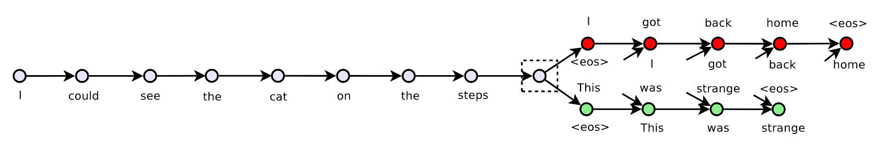 ] .footnote.small[ Kiros, Ryan, et al. "Skip-thought vectors." NIPS 2015. ] -- <br/> - Similar to Skim-gram Word2Vec, but with sentences - One encoder and two decoders, GRUs or bi-GRUs - train on triplets of sentences -- .center[ 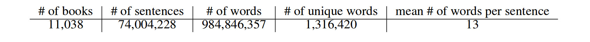 ] --- ## Skip-thought vectors .center[ 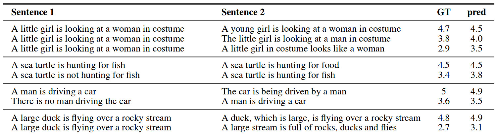 ] .footnote.small[ Kiros, Ryan, et al. "Skip-thought vectors." NIPS 2015. ] -- <br/> But not always competitive with BoW techniques, see review *Learning Distributed Representations of Sentences from Unlabelled Data, Hill, Felix et al. NAACL-HLT. 2016.* --- ## Large Vocabulary Size **Softmax** computation becomes **intractable** both at training and inference time (sum over $|V|$). -- **Negative Sampling** works well to learn word embeddings but is **not a good approximation** for **language modeling** and machine translation. -- Approximate softmax with **sampled softmax** (a.k.a. bucketing): - Accumulate train sequences in buckets $i \in B$ with $|V_i| ~= 50k$; - Sample bucket $i$ at random and train with regular softmax on $V_i$; - Share softmax parameters for words in common across buckets; - Iterate untill the end of the training set. ??? Sampled softmax (https://arxiv.org/abs/1412.2007): - Biased estimate, but works reasonably well in practice; - Also useful to train item embedding in RecSys. --- ## Alternative to Word Embeddings Character-level Embedding (possibly with a CNN layer) - (+) Much smaller vocabulary size - (+) No need for language specific segmentation (e.g. Chinese); - (+) Robust to spelling mistakes and out-of-vocabulary words; - (+) Can deal with mixed language contents. -- however - (-) Need to learn word structure from data; - (-) Decoding more complex and expensive. -- Sub-word representations and **Byte Pair Embedding** (BPE) are better ??? BPE (https://arxiv.org/abs/1508.07909): - Start with a vocabulary of characters (encoded as bytes); - Scan training set to compute most frequent char bigrams and replace them with a new single byte symbol; - Recurse until target vocabulary size is reached (hyper-parameter). --- class: center,middle # Attention Mechanism --- # Attention Mechanism Main problem with Encoder-Decoder: - A sentence may have different parts with different concepts - The **whole sentence** is represented as a **single vector** .center[ *I like cats but I don't like dogs* ] .footnote.small[ In depth explanation on https://blog.heuritech.com/2016/01/20/attention-mechanism/ ] -- <br/> Solution: - Use all outputs of the encoder $\{h_i\}$ to compute the outputs - Build an **Attention Mechanism** to determine which output(s) to attend to --- # Attention Mechanism .center[ <img src="images/attention_simp_2.png" style="width: 670px;" /> ] - Goal : select most relevant vector(s) given context $\mathbf{c}$ --- # Attention Mechanism .center[ <img src="images/attention_simp_0.png" style="width: 670px;" /> ] -- <br/> - $f_{att}$ may be a cosine similarity, a deep network, etc. - softmax enables to normalize and focus on very few items --- # Attention Mechanism .center[ <img src="images/attention_simp_1.png" style="width: 670px;" /> ] -- Compute a soft (differentiable) selection on a set of vectors --- # Attention Mechanism .center[ <img src="images/attention_0.png" style="width: 670px;" /> ] .footnote.small[ Neural machine translation by jointly learning to align and translate, D Bahdanau, K Cho, Y Bengio 2014 ] --- # Attention Mechanism .center[ <img src="images/attention_1.png" style="width: 670px;" /> ] .footnote.small[ Neural machine translation by jointly learning to align and translate, D Bahdanau, K Cho, Y Bengio 2014 ] --- # Attention Mechanism .center[ <img src="images/attention_2.png" style="width: 670px;" /> ] .footnote.small[ Neural machine translation by jointly learning to align and translate, D Bahdanau, K Cho, Y Bengio 2014 ] --- # Attention Mechanism .center[ <img src="images/attention_3.png" style="width: 670px;" /> ] .footnote.small[ Neural machine translation by jointly learning to align and translate, D Bahdanau, K Cho, Y Bengio 2014 ] --- # Visualizing Attention .center[ <img src="images/align.png" style="width: 670px;" /> ] .footnote.small[ Neural machine translation by jointly learning to align and translate, D Bahdanau, K Cho, Y Bengio 2014 ] --- # Image Captioning .center[ <img src="images/captioning_model.png" style="width: 500px;" /> ] .footnote.small[ Xu, Kelvin, et al. "Show, Attend and Tell: Neural Image Caption Generation with Visual Attention." ICML. 2015 ] -- .center[ <img src="images/visual_attention.png" style="width: 500px;" /> ] --- # The GNMT architecture .center[ <img src="images/gnmt-architecture.png" style="width: 600px;" /> ] .footnote.small[ Yonghui Wu et al. "Google's Neural Machine Translation System: Bridging the Gap between Human and Machine Translation" ] ??? - bi LSTM - stack LSTM GPU - reLU - inference TPU --- ### Alternative Machine Translation architecture .center[ <img src="images/transformer.png" style="width: 350px;" /> ] .footnote.small[ Attention Is All You Need Ashish Vaswani et al. NIPS 2017 ] --- class: center, middle # Reasonning, Attention and Memory --- ## Question answering tasks .center[ 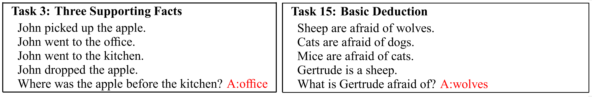 ] .footnote.small[ Jason Weston, Antoine Bordes, Sumit Chopra, Alexander M. Rush, Bart van Merriënboer, Armand Joulin and Tomas Mikolov. Towards AI Complete Question Answering: A Set of Prerequisite Toy Tasks, 2015 ] -- <br/> - **Facts** (sentences), **Questions** (sentences) and **answers** (word) - Dataset is generated by templates - See also facebook's artificial tasks for reasoning: https://research.fb.com/downloads/babi/ --- ## Memory Networks .center[ 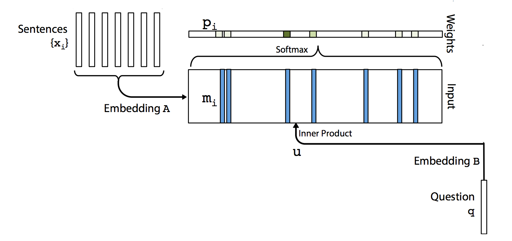 ] - Embed a collection of facts (i.e. sentences) - Compute an attention depending on a query (i.e. a question) .footnote.small[ Sainbayar Sukhbaatar, Arthur Szlam, Jason Weston, Rob Fergus al. NIPS 2015 ] --- ## Memory Networks .center[ 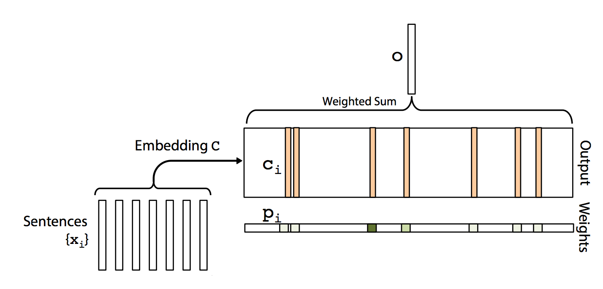 ] - Output is a weighted sum of the fact embeddings - The embedding for querying is different from the output embedding .footnote.small[ Sainbayar Sukhbaatar, Arthur Szlam, Jason Weston, Rob Fergus al. NIPS 2015 ] --- ## Memory Networks .center[ 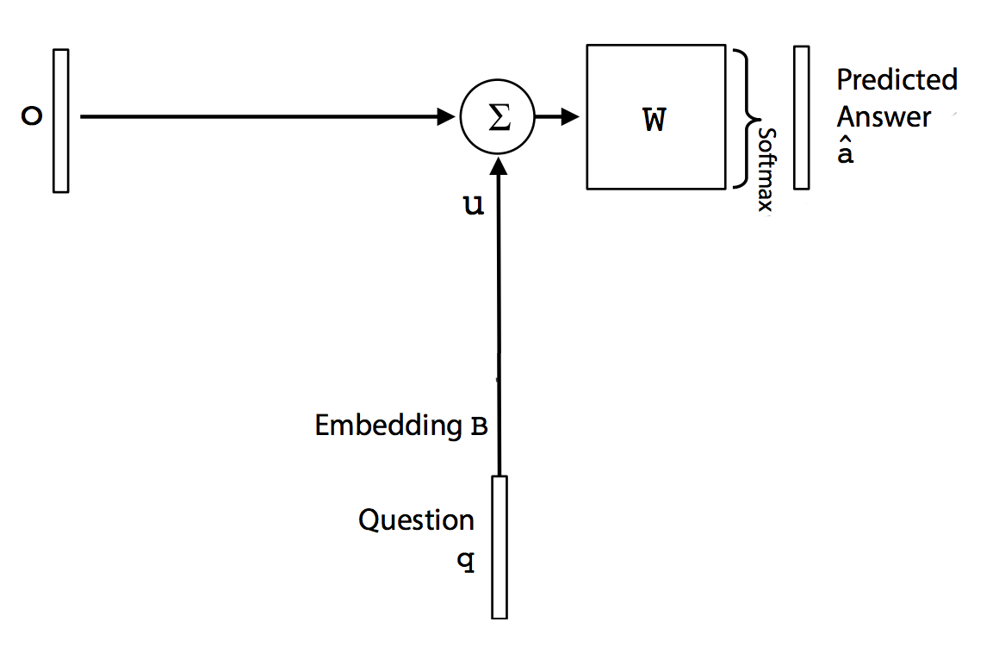 ] - The output is then used in a classification scheme - Question is also re-used as input .footnote.small[ Sainbayar Sukhbaatar, Arthur Szlam, Jason Weston, Rob Fergus al. NIPS 2015 ] --- ## Memory Networks .center[ 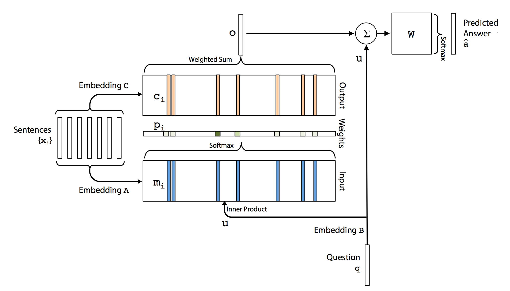 ] - Parameters: Embedding matrices $A, B, C$ ; Dense output layer .footnote.small[ Sainbayar Sukhbaatar, Arthur Szlam, Jason Weston, Rob Fergus al. NIPS 2015 ] --- ## Memory Networks .center[ 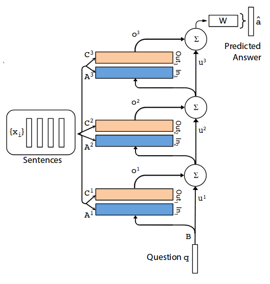 ] .footnote.small[ Sainbayar Sukhbaatar, Arthur Szlam, Jason Weston, Rob Fergus al. NIPS 2015 ] -- - Several "hops" of "reasonning" to produce the right answer - Embedding layers can be tied: $A_1 = A_2 = A_3$ and $C_1 = C_2 = C_3$, making it similar to a RNN --- ## Memory Networks .center[ 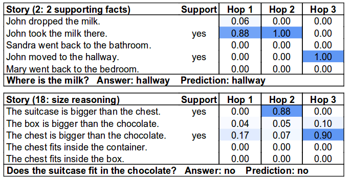 ] - Everything is trained end-to-end from (Facts + Questions) to (Answer) - Visualizing attention enables to understand the behavior of the network .footnote.small[ Sainbayar Sukhbaatar, Arthur Szlam, Jason Weston, Rob Fergus al. NIPS 2015 ] --- ## Key-Value Networks .center[ 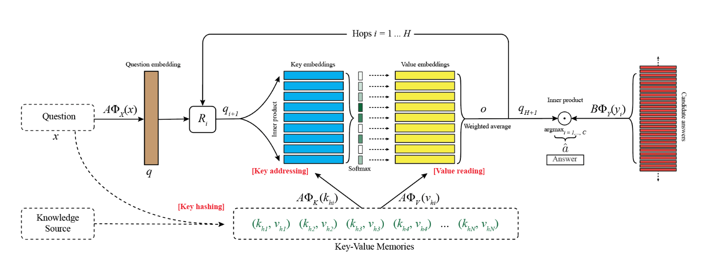 ] Globally the same architecture as Memory Networks .footnote.small[ Sainbayar Sukhbaatar, Arthur Szlam, Jason Weston, Rob Fergus al. NIPS 2017 ] -- Interpreted as soft RAM or soft hashmap (soft ~ differentiable and learnable) --- ## Neural Turing Machine .footnote.small[ Graves, Alex, Greg Wayne, and Ivo Danihelka. "Neural turing machines." NIPS 2014 <br/> Graves, Alex, et al., Hybrid computing using a neural network with dynamic external memory. Nature 2016 ] .center[ 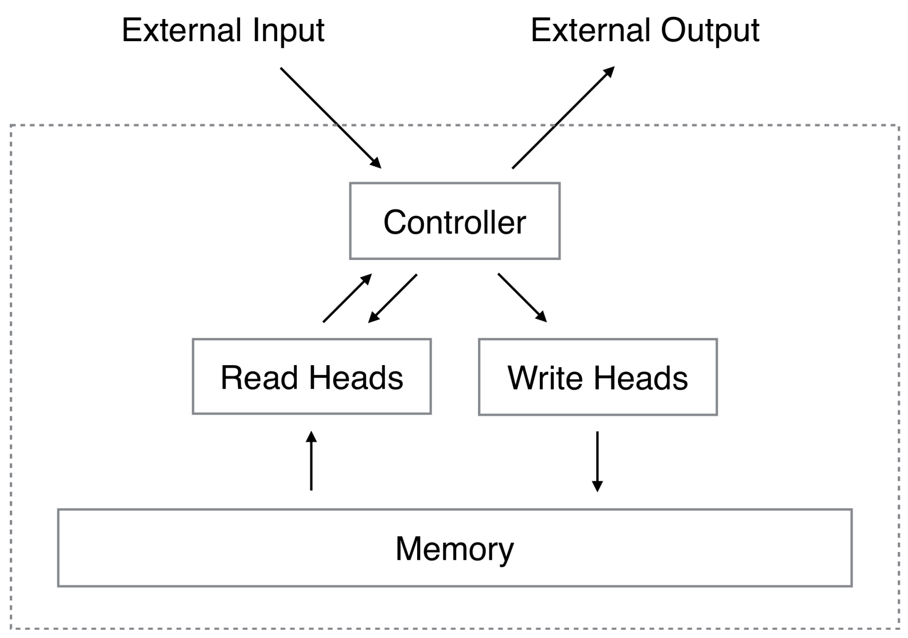 ] End to end differentiable architecture with access to a dynamic memory (read and write) -- - See also Differentiable Neural Computers, Stack augmented RNNs, etc. - https://distill.pub/2016/augmented-rnns/ --- ## Reading comprehension .center[ 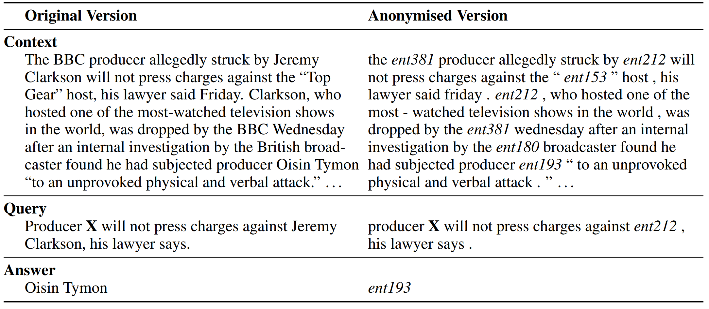 ] .footnote.small[ Hermann, Karl Moritz, et al. "Teaching machines to read and comprehend." NIPS 2015. ] -- Read text and query (through RNN-like architecture), then produce answer (classification or language model). --- ## Question answering (SQuAD) .center[ 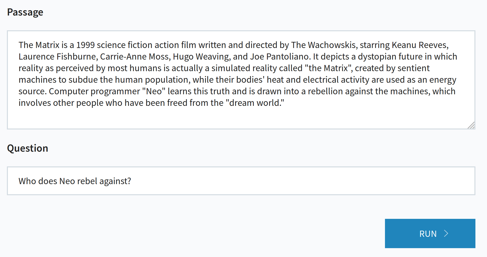 ] .footnote.small[ http://demo.allennlp.org/machine-comprehension ] --- ## Question answering (SQuAD) .center[ 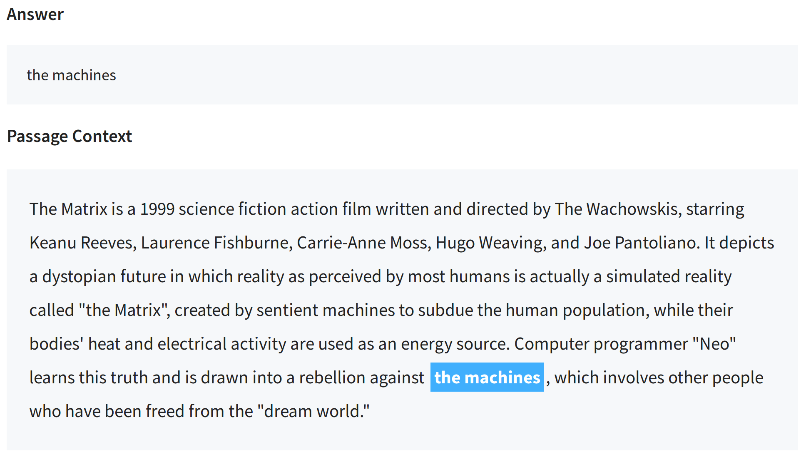 ] .footnote.small[ http://demo.allennlp.org/machine-comprehension ] --- class: middle, center # Lab 5: back here in 15 min!